31.GridView
수정 일자 버전 (SP2)
WebSquare5 Studio : 20180117_1349_x86_B
WebSquare5 Engine : 5.0_2.2982B.20180223.154326_1.5
테이블 형 자료를 그리드로 표시 GridView는 DataCollection의 데이터를 표현하기 위한 주 목적으로 사용됩니다. DataCollection을 Binding하여 편리하게 데이터를 표현할 수 있는 컴포넌트 입니다. Grid 컴포넌트와 동일한 편집기능을 갖고 있으며 데이터를 바인딩 할 때 기본값을 생성해줍니다.
(Websquare5에서는 GridView라는 컴포넌트를 새로 추가했습니다. 기존의 Websquare2.0 버전에서 사용했던 Grid컴포넌트 보다 더 강력한 편집기능을 탑재하였습니다.)
31.1Property
Property | Description |
|---|---|
adaptive | 적응형 웹(다양한 화면크기와 디바이스에 맞게 레이아웃을 변경) 모드. 기본(none) |
adaptiveThreshold | adaptive가 설정되어 있을 경우 레이아웃 변경을 하기 위한 breakpoint (기본값 : 480) |
applyAllColumnStyle SP2 | column에 정의된 스타일들을 모두 적용할지 여부(기본값은 false이며 column에 정의된 스타일 속성 중 첫번째만 적용됨) |
arrowMove | 셀 내부의 첫번째 혹은 마지막 문자열에서 좌우 방향키를 이용한 셀 이동 허용. true: 이동 가능. false (기본 값): 이동 불가. 관련 속성: moveKeyEditMode="true"인 경우에만 유효. |
autoFit | gridVeiw에 정의 된 width에 맞춰 여백이 없이 가득 채워주는 기능으로 가로 스크롤이 생기지 않습니다. allColumn은 여백을 모든 컬럼에 분배하여 조절하며 lastColumn은 마지막 컬럼을 allColumn은 모든 컬럼의 너비를 조정합니다. |
autoFitMinWidth | gridView의 최소 width(px단위)를 지정하는 기능으로 autoFit속성의 값이 allColumn일 때 적용됩니다. |
captionAUto | [default:false] captionTitle이 정의된 경우 captionTitle과 표의 Header Title을 조합해서 표 제목으로 표시. 단, 헤더에 대해 inputType="text"가 설정된 경우에만 동작. tableLayout 컴포넌트에서 본 기능을 사용할 경우, tagName="table"로 지정해야 함. true: CaptionTitle과 표의 Header Title을 조합해서 표 제목으로 표시. false: (기본 값) 표시 안 함. GridView가 항목 1, 항목 2, 항목 3을 Header Title로 갖는 경우 아래 예제를 적용하면 다음이 제목으로 표시. "거래내역 은(는) 항목 1, 항목 2, 항목 3 을(를) 나타낸 표" |
captionTItle | [default:""] captionAuto="true"인 경우, 표의 각 Header Title 앞에 표시할 내용. |
checkEditableInputClass SP2 | [default: false, true] inputType = "text" 이고 cell의 상태가 readOnly이거나 disable인 경우, nobr 태그에 "w2grid_input" class를 삭제하도록 설정. true: readOnly 또는 disable시 nobr태그에 "w2grid_input" class 삭제됨 false : nobr태그에 항상 "w2grid_input" class가 적용됨. |
checkReadOnlyOnPaste SP2 | [default:false, true] Ctrl(또는 cmd)+V를 눌러 클립보드에서 그리드로 붙여넣기하는 경우 readOnly 되어있는 컬럼에 데이터를 세팅할지 여부 true : readOnly가 적용된 컬럼에 '붙여넣기' 기능이 동작하지 않는다. false: readOnly가 적용된 컬럼에 '붙여넣기' 기능이 동작한다. |
checkReadOnlyOnPasteEnable SP2 | [default:""]checkReadOnlyOnPaste="true"로 적용된 컬럼에서도 '붙여넣기' 기능을 컬럼 단위로 동작되도록 컬럼ID를 설정함. (사용 예) checkReadOnlyOnPasteEnable = "col1,col2"; col1,col2 컬럼은 readOnly 및 checkReadOnlyOnPaste 옵션이 "true"로 설정되어도 '붙여넣기' 기능이 동작. |
class | HTML의 class속성과 동일한 기능을 제공하며 css파일 또는 style블럭에 정의한 class를 1개 또는 공백(space)를 이용하여 다중 적용이 가능합니다. gridView컴포넌트는 매우 복잡한 구조를 가진 컴포넌트로 css의 selector를 이용하여 하위 항목에 접근 해야 합니다. 기본적으로 엔진 내부에서 컴포넌트별로 class를 적용하고 있으며 해당 class를 이용하여 컴포넌트의 css를 공통으로 적용 할 수 있습니다. |
columnMove | gridView 헤더를 마우스로 drag하여 컬럼을 이동할 수 있는 기능으로 drag시에 이동 될 컬럼의 header value속성에 명시 된 값이 tooltip형태로 표현됩니다. |
columnMoveWithFooter | [default: false, true] setColumnOrder 함수를 호출하여 컬럼을 이동하거나 columnNove="true" 설정인 경우 마우스 드래깅을 통해 칼럼을 이동할 때 footer도 함께 이동. (단, footer가 header 및 body와 병합 구조가 다른 경우에는 미지원.) true: footer도 함께 이동. false (기본 값): footer는 이동하지 않음. 관련 함수 및 속성: setColumnOrder, columnMove="true" |
contextMenu SP2 | [default: false, true] context menu 사용 여부 |
dataDragDrop | [true, false] gridView간의 데이터를 drag&drop을 이용하여 주고받을지의 사용 여부로 FireFox에서는 Ctrl 키를 누르고 사용해야한다. 기본적으로 2개의 gridView가 각기 다른 dataList에 연동되어있어야하며 본 속성이 동일하게 적용되어 있어야한다. |
dataDragSelect SP2 | [true, false] 여러 개의 그리드 셀들을 드래그로 선택할 수 있을지 여부(dataDragDrop 기능과 함께 사용할 수 없음.) |
dataList SP2 | gridView의 data에 해당하는 DataCollection의 DataList id. |
defaultCellHeight SP2 | 셀의 기본 높이 |
disabledBackgroundColor | disabled이 적용 된 cell 또는 행의 배경색. |
disabledFontColor | disabled이 적용 된 cell 또는 행의 글자색. |
disabledScrollHidden SP2 | [default:false, true] gridView가 disabled될 때 scroll도 함께 감출 것인가에 대한 옵션. 비 IE 브라우저에서 gridView가 disabled 되더라도 스크롤은 움직일 수 있는 현상을 원천적으로 차단하기 위한 속성이다. |
drilldownToggleScrollFix SP2 | r[default:false, true] drilldown 컬럼에서 +버튼을 클릭하여 목록을 펼칠 때 gridView 스크롤이 움직이지 않고 고정되도록 하는 속성 |
evenRowBackgroundColor | 짝수 행의 배경색 |
editModeEvent | 수정모드로 변환하기 위한 이벤트 |
enterKeyMove | [default:down, right, none, edit] cell에서 enter key 입력 시 포커스 이동방향에 대한 설정 |
euroMask SP2 | [default: ""] 화폐단위 변경을 위해 dataType = "euro" 로 설정한 경우나 changeCurrency API를 사용했을 때 적용되는 마스킹 값. |
evenRowBackgroundColor | 짝수 행의 배경색 |
excludeModifiedRows SP2 | [default:false, true] subtotal(소계)과 footer(합계)등에 사용되는 expression속성에서 modifyRowStatus API로 "D"상태가 적용된 row를 제외하고 계산한다.( modifyRowStatus API를 사용한 경우 ) |
fixedColumn | 세로 틀고정을 시킬 컬럼의 위치로 첫번째 컬럼일 경우 "1"로 입력 설정 |
fixedColumnWithHidden | [default:true, false] fixedColumn속성의 위치값에 hiddenColumn을 포함하여 계산할지 여부 |
fixedRow SP2 | 세로 틀고정을 시킬 컬럼의 위치로 첫번째 로우일 경우 "1"로 입력 설정 |
footerSummaryAuto SP2 | [default: ""(빈 값)] captionAuto 설정에 상관 없이 footer의 summary 속성에 바닥글을 자동 생성. 관련 속성: captionTitle, footerSummary |
hideHeader | [default:false, true] header 숨김 여부. |
hammerEnabled SP2 | [default:true, false] 모바일에서 dblclick이벤트를 Hammer.JS의 press이벤트로 처리할것인지에 대한 여부 |
hammerPressTime SP2 | press이벤트가 발생하기까지 누르고 있어야 할 시간. 단위는 ms이며, 기본값은 251ms이다. |
id | 컴포넌트의 ID로 전역객체로 할당되며 script에서 본 id로 컴포넌트에 접근이 가능합니다. |
ignoreCellClick | drilldown사용할때 toggle 이미지 클릭시 gridView에 oncellclick 이벤트를 발생시키지않음 |
ignoreToggleOnDisabled | drilldown사용할때 toggle 이미지 클릭시 해당 셀에 disabled가 적용되어 있을 경우 toggle시키지 않음. |
keepDefaultColumnWidth | [default:false, true] autoFit속성을 true로 설정할 경우 rowNum컬럼(rowNumVisible속성)과 rowStatus컬럼(rowStatusVisible속성)의 width를 고정한다. |
mergeCells SP2 | 행 또는 열 기준으로 연속적으로 같은 데이터들을 merge한다. https://inswave.com/jira/browse/WPF-1402 never : mergeCells에 의해 자동으로 merge된 것들을 해제한다. bycol : 같은 column 내에서 연속적으로 데이터가 같은 row들을 merge한다 byrow : 같은 row 내에서 연속적으로 데이터가 같은 column들을 merge한다. bycolrec : bycol후, merge되지 않은 cell들을 대상으로 byrow를 실행한다 byrowrec : byrow후, merge되지 않은 cell들을 대상으로 bycol을 수행한다. byrestriccol : 같은 column 내에서 연속적으로 데이터가 같으면서 동시에 자신의 왼쪽에 위치한 column이 merge된 경우 해당 row들을 merge한다. (n+1컬럼에 n컬럼을 upperColumn으로 지정한 형태) byrestricrow : 같은 row 내에서 연속적으로 데이터가 같으면서 동시에 자신의 위쪽에 위치한 row가 merge된 경우 해당 row들을 merge한다. (n+행에 n행을 upperRow으로 지정한 형태) |
mergeCellsFixedCols SP2 | fixedColumn 영역 내에서 행 또는 열 기준으로 연속적으로 같은 데이터들을 merge한다. https://inswave.com/jira/browse/WPF-1402 never : mergeCells에 의해 자동으로 merge된 것들을 해제한다. bycol : 같은 column 내에서 연속적으로 데이터가 같은 row들을 merge한다 byrow : 같은 row 내에서 연속적으로 데이터가 같은 column들을 merge한다. bycolrec : bycol후, merge되지 않은 cell들을 대상으로 byrow를 실행한다 byrowrec : byrow후, merge되지 않은 cell들을 대상으로 bycol을 수행한다. |
mergeCellsFixedRows SP2 | fixedRow 영역 내에서 행 또는 열 기준으로 연속적으로 같은 데이터들을 merge한다. https://inswave.com/jira/browse/WPF-1402 never : mergeCells에 의해 자동으로 merge된 것들을 해제한다. bycol : 같은 column 내에서 연속적으로 데이터가 같은 row들을 merge한다 byrow : 같은 row 내에서 연속적으로 데이터가 같은 column들을 merge한다. bycolrec : bycol후, merge되지 않은 cell들을 대상으로 byrow를 실행한다 byrowrec : byrow후, merge되지 않은 cell들을 대상으로 bycol을 수행한다. |
moveKeyEditMode SP2 | 방향키로 원하는 방향에 위치한 셀의 editMode 상태에 바로 진입한다. |
numberMask SP2 | [default: ""] 화폐단위 변경을 위해 dataType = "number" 로 설정한 경우나 changeCurrency API를 사용했을 때 적용되는 마스킹 값. |
oddEvenColorDisplay | [default:true, false] 행의 짝,홀수의 반복색을 사용할지의 여부. |
oddRowBackgroundColor | 홀수 행의 배경색 |
pasteOption SP2 | [default: "", focus] Ctrl(또는 cmd) + V를 눌러 클립보드에 복사된 컬럼 단위의 데이터의 붙여넣을 방법을 지정하는 속성 |
preventAddRowOnPaste SP2 | [default: false, true] Ctrl(또는 cmd)+V를 눌러 클립보드에서 그리드로 붙여넣기하는 경우 새로운 행을 추가시킬지의 여부 |
preventCopy SP2 | [default: false, true] Ctrl(또는 cmd)+C를 눌러 그리드 전체의 데이터를 클립보드에 복사하는 동작을 방지. |
preventCopyColumn SP2 | [default: ""] Ctrl(또는 cmd) + C를 눌러 컬럼 단위의 데이터를 클립보드에 복사하는 동작을 방지. preventCopyColumn속성을 적용할 컬럼 ID를 string형태로 적용한다. (사용 예) preventCopyColumn = "col1,col2"; |
preventPaste SP2 | [default: false, true] Ctrl(또는 cmd)+V를 눌러 클립보드에 복사된 컬럼 단위의 데이터를 붙여넣는 동작을 방지. |
preventPasteColumn SP2 | [default: ""] Ctrl(또는 cmd) + V를 눌러 클립보드에 복사된 컬럼 단위의 데이터를 붙여넣는 동작을 방지. preventPasteColumn속성을 적용할 컬럼 ID를 string형태로 적용한다. (사용 예) preventPasteColumn = "col1,col2"; |
readOnly | [default:false, true] gridView전체의 각 cell을 readOnly로 적용하며 body 컬럼의 readOnly속성이 설정된 경우 해당 컬럼의 속성이 우선시 됩니다. readOnly 속성은 gridView,column,row,cell 별로 속성 또는 API로 조절이 가능하며 우선 순위에 따라 적용된됩니다. 우선 순위는 아래와 같습니다. gridView < column < row < cell (column과 row의 우선 순위는 gridView의 readOnlyPriority속성에 의해 변경 가능) |
readOnlyBackgroundColor | readOnly속성이 true인 cell의 배경색. |
readOnlyBackgroundImg | readOnly속성이 true인 cell의 배경 이미지의 경로. |
readOnlyBackgroundImgCSS | readOnly속성이 true인 cell의 배경이미지의 CSS 구문으로 readOnlyBackgroundImg속성보다 우선됩니다. 예시 ) background: steelblue url("이미지경로") 10px 50% no-repeat; |
resize | [default:true, false] header의 컬럼 경계선에서 마우스 drag를 이용하여 컬럼의 폭 크기를 조절 할지의 여부. |
rowMouseOver | [default:true, false] 마우스 over시에 over된 행의 배경색을 표시할지의 여부. |
rowMouseOverColor | 마우스 over시의 행 배경색. |
rowNumBackgroundColor | rowNumVisiblue속성이 true인 경우 해당 body 컬럼의 배경색. |
rowNumHeaderValue | 행 번호를 표시할 column의 head에 표시할 text |
rowNumVisible | 행 번호 표시 여부 |
rowNumWidth | rowNumVisiblue속성이 true인 경우 해당 컬럼의 width. |
rowStatusHeaderValue | 행 상태를 표시할 column의 head에 표시할 text |
rowStatusVisible | 행 상태 표시 여부 |
rowStatusWidth | rowStatusVisible 속성이 true인 경우 해당 컬럼의 width. |
rowNumLocaleRef SP2 | rowNum 컬럼에 설정할 localeRef 키. |
rowNumStatusUniqueId SP2 | [default:false, true] rowNumVisible 또는 rowNumStatus 사용 시 각 row별로 unique한 id를 사용할지에 대한 여부 기본값은 false로 이 경우 모든 rowNum td들의 id는 _headerRowNumber이고 rowStatus td들의 id는 _headerStatusNumber가 된다. W3C validator를 통과하기 위해서는 이 속성값이 true여야 한다. 즉 이 속성값을 true로 사용할 것을 권장한다. |
rowStatusLocaleRef SP2 | rowStatus 컬럼에 설정할 localeRef 키. |
rupeeMask SP2 | [default: ""] 화폐단위 변경을 위해 dataType = "rupee" 로 설정한 경우나 changeCurrency API를 사용했을 때 적용되는 마스킹 값. |
sortable | gridView의 헤더 클릭을 통한 데이터 정렬 지원 여부 |
selectedCellColor | 선택 된 cell의 배경색. |
selectedCellOverColor | 선택 된 cell에 마우스 over시의 배경색.(지정하지 않으면 rowMouseOverColor속성의 값을 사용) |
selectedRowColor | 선택 된 행의 배경색. |
selectedRowOverColor | 선택 된 행에 마우스 over시의 배경색.(지정하지 않으면 rowMouseOverColor속성의 값을 사용) |
senseReader | [default:false, true] 웹 접근성을 지원하기 위한 모드. 이 모드를 true로 설정하면 tab키로 gridView의 모든 cell을 순회할 수 있습니다. 또한 inputType="text", "select", "radio", "checkbox"인 경우 embeddedInput="true"를 적용하여 cell내부에 직접 input(또는 select,radio,checkbox)가 포함되어 그려지게 되어 이를 리더기에서 인식할 수 있게 됩니다. focusMode="none", focusMove="false" 속성과 함께 사용할 것을 권장합니다. |
style | GridView의 style 속성 |
summary | HTML의 table Tag의 summary 속성과 동일한 기능을 제공한다. 일반적으로 웹접근성 화면 구현시 사용됩니다. |
showImageTooltip SP2 | [default: false, true] inputType = "image"인 경우, tooltip이 나오도록 설정함. true: inputType = "image"인 경우, tooltip 기능이 동작함. false (기본 값): inputType = "image"인 경우, tooltip 기능이 동작 안 함. |
syncScrollw SP2 | 다수의 grid를 동시에 세로로 scroll시키기 위한 옵션. grid의 row의 갯수가 동일할 경우에만 동작. |
syncScrollId SP2 | scroll을 동기화 시킬 grid의 id |
titleAuto SP2 | [default: false, true] cell의 header inputType = "text"이고 cell의 inputType이 "text, link, checkbox, button, radio, select(tableRender = "ul"인 경우), secret"일 때, cell의 title속성에 자동으로 다음과 같은 값이 나타나도록 설정함. 예를들어서 cell의 header Tiltle 값이 "name1" 이고 cell의 data값이 "1"이며 inputType = "text" 인 경우, 해당 cell의 title속성 값은 title = "name1 1" 으로 나타남. 만약 cell의 data값이 ""인 경우에는 해당 cell의 title속성 값은 title = "name text"으로 나타남. |
tooltipDisplay | [default:false, true] cell의 데이터가 width보다 긴 경우 해당 데이터를 마우스 over시 툴팁으로 표현할지의 여부. |
tooltipDisplayColumn SP2 | [default: false, true] 특정 컬럼만 tooltip이 표현되도록 컬럼명을 설정함 사용 예) tooltipDisplayColumn = "col1,col2"; |
tooltipHeader SP2 | [default:false, true] gridView의 header에 tooltip을 나타내는 설정.tooltipDisplay = "true"(또는 tooltipShowAlways="true")로 설정 후 동작함. 기존에 tooltip 관련 옵션인 tooltipDisplay 및 tooltipDisplayTime등과 기능이 일치한다. |
tengeMask SP2 | [default: ""] 화폐단위 변경을 위해 dataType = "tenge" 로 설정한 경우나 changeCurrency API를 사용했을 때 적용되는 마스킹 값. |
visibleRowNum | 화면에 표현 될 행 수. "all"로 설정 시 모든 row가 스크롤 없이 표현됩니다. |
wheelStop | [default:false] 그리드 스크롤이 맨 아래로 내려갔을 때 wheel을 한 경우 브라우저 스크롤을 막을지에 대한 여부 |
- GridView[Column] Property
Property | Description |
|---|---|
allOption | inputType이 selectbox인 경우에 전체를 선택하는 라벨을 표시할지 여부 |
calendarClass | [default:class1, class2, class3, class4, class5]Calendr의 스킨 종류를 정의합니다. |
calendarValueType | inputType이 calendar인 경우에 calendar의 타입 |
class | column에 적용될 class |
colMerge | 선택한 열에서 동일데이터 행 반복시 하나의 셀로 표현할지 여부 |
colspan | span할 열의 수 |
dataType | column의 데이터 Type 설정하지 않은 경우 dataColleciton(dataList)의 dataType을 설정하게 됩니다(권장사항). subTotal, Footer는 gridView column에 dataType을 설정 합니다. |
depthColumn | inputType이 drilldown일 때 depth를 표시해줄 열의 id |
depthType | grid의 drilldown 사용 시 노드의 연관관계를 표현하는 방식 nbsp : 공백(default), div : 빈 div상자, line : 이미지로 표현, none : 미표현 |
disabled | 셀의 disabled 여부 |
disabledClass | 셀이 disabled 일때 추가할 class이름 |
imageHeight | inputType이 image인 경우에 이미지의 높이 |
imageSrc | inputType이 image인 경우에 이미지의 경로 |
imageWidth | inputType이 image인 경우에 이미지의 폭 |
imeMode | inputType이 text인 경우 ime-mode(css) 값을 설정합니다. (ime-mode가 지원 가능한 일부 브라우저에서 동작함) |
inputType | 셀의 타입 - text : 열의 셀 값을 일반 텍스트로 표현합니다. - link : 열의 셀 값을 밑줄 쳐진 강조된 텍스트로 표현합니다. - checkbox : 열의 셀 값을 true/falseValue 에 따라 다중 행 선택이 가능합니다. - button : 열의 셀 값을 버튼으로 표현합니다. - image : 열의 셀 값을 이미지 표현합니다. - radio : 열의 셀 값을 true/falseValue 에 따라 하나의 행 선택이 가능합니다. - select : 설정된 항목 리스트 중에서 열의 셀 값과 같은 value의 label(name)을 선택합니다. - calendar : 열의 셀 값을 설정된 날짜 형태(기본:yyyy-MM-dd)로 표현하며, 달력 아이콘을 보여준다. 달력 아이콘으로 캘린더에서 선택 가능합니다. - expression : expression 속성에 WebSquare가 제공하는 기능함수를 사용하여 텍스트를 표현합니다. - 다른 컬럼을 참조하여 새로운 데이터를 생성하는 사용자 정의 함수를 만들어 사용이 가능합니다. - expression 속성 값의 예 : display('columnID'), rowIndex(), userExp(rowIndex(), display('columnID')) - textarea : 열의 셀 값을 여러줄의 텍스트로 표현합니다. - drilldown : +, - 버튼이 있는 트리 형태로 표현합니다. - textImage : 열의 셀 값을 일반 텍스트로 표현하며, 아이콘을 보여준다. 이벤트처리함수(imageClickFunction)를 사용하여 아이콘 클릭에 따른 동작을 설정할 수 있습니다. - checkcombobox : checkbox 와 combobox 가 결합된 형태로 한가지 이상의 항목을 선택할 수 있는 combobox 입니다. - autoComplete : 텍스트를 입력하면 자동으로 해당 텍스트를 갖고 있는 값을 표시합니다. - secret : 텍스트를 안보이도록 감추기 기능을 합니다. |
rowspan | span할 행의 수 |
showDepth | inputType이 drilldown인 경우에 처음 로딩시 보여줄 depth |
textAlign | 셀의 텍스트 정렬 부분 |
value | 셀의 값 |
viewType | 그리드 셀이 편집중인 상태가 아닐때 기본 형태로 보여질지, 아니면 icon을 표시하는 형태로 보여지질 결정하는 타입 |
width | 컬럼의 width 값 |
fastScroll | 세로 스크롤 이동시 빠르게 스크롤되는 효과를 주는 기능으로 시간내에 그릴수 있는 부분까지만 표현한다. 그려지지 못하는 영역에는 "화면 갱신 중 입니다." 라는 메세지가 표현된다. |
31.1.1autofit 설정

- autofilt="allColumn"
화면 조회시 그리드 컬럼의 width를 자동으로 늘리거나 줄여 그리드에 지정된 width를 채워서 그리는 옵션이다.
autofilt="allColumn"은 화면에 보이는 모든 컬럼이 균등하게 늘어나 그리드 width를 채운다.
- autoFitMinWidth
위의 화면에서 autofit를 allColumn으로 설정 시 브라우저를 원하는대로 늘리거나 줄여도 그리드는 100%로 리사이징 됩니다, 하지만 최소넓이 값을 갖고 싶으면 autoFitMinWidth 속성을 제어하시면 됩니다. 예) 해당값을 1024px로 지정하면 그리드풀사이징에서 해당 사이즈로 줄었을때 가로 스크룰이 발생되며 더 이상 리사이징을 막습니다.
- autofit="lastColumn"
autofilt="lastColumn"은 화면에 보이는 마지 컬럼만 늘어나 그리드 width를 채운다.

31.1.2autoFitMinWidth 설정
autofit를 allColumn으로 설정 시 브라우저를 원하는대로 늘리거나 줄여도 그리드는 100%로 리사이징 됩니다, 하지만 최소넓이 값을 갖고 싶으면 autoFitMinWidth 속성을 제어하시면 됩니다.
예) 해당값을 1024px로 지정하면 그리드풀사이징에서 해당 사이즈로 줄었을때 가로 스크룰이 발생되며 더 이상 리사이징을 막습니다.
31.1.3inputType 설정
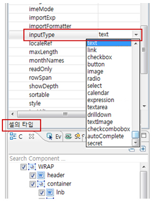
[그림 31-1]7
그리드셀을 선택한 후 해당셀의 inputType을 설정할수 있습니다. 원하는 타입을 선택하셔서 그리시면 됩니다. text : input태그 link : a태그 checkbox : checkbox태그 button : button태그 image : 이미지태그 radio : radio태그 select : select태그 calendar : 달력폼 expression : 간단한 합계/평균등을 계산하여 표시하는 기능 textarea : textarea 태그 drilldown : Level 입력되어 있는 컬럼명을 참조하여 뎁스를 표시 (웹스퀘어템플릿사이트참조:http://template.websquare.co.kr/) textImage : 입력박스랑이미지결합된 컴포넌트 checkcombobox : select태그에서 멀티선택 가능한 태그 autoComplete : input방식의 자동완성 기능 secret : secret 태그
31.1.4visibleRowNum 적용
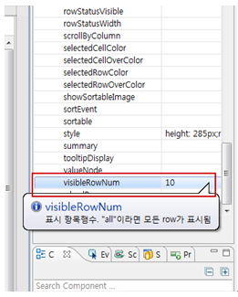
[그림 31-2]8
그리드전체를 선택한 후 visibleRowNum 수를 설정하면 그 수 만큼 높이 무시하고 행추가 됩니다. 숫자를 초과한 데이터는 스크룰형태로 나타납니다.
31.1.5셀의 데이터가 길어질 때는 tooltipDisplay

[그림 31-3]9
그리드의 셀 크기가 긴 데이터일 경우 해당 셀 마우스 오버 시 내용이 보입니다.
31.1.6grid.insertRow();
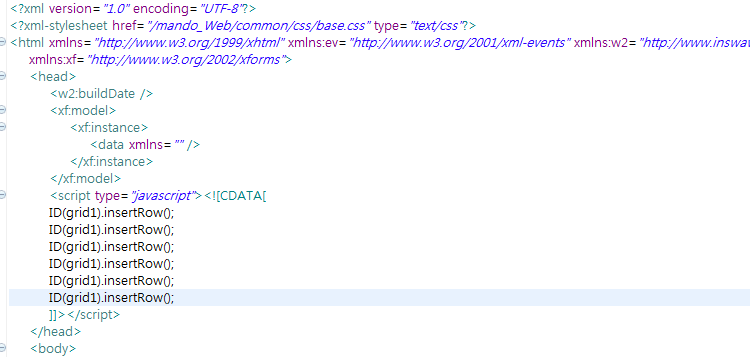
그리드 API를 이용하여 UI화면에서 행추가된 내용을 보여줄때 용이하게 쓰입니다.
예:) insertRow()를 6줄 추가하면 UI화면에 그리드 6줄로 표시됩니다.
31.2브라우저 캡쳐화면

[그림 31-4]gridview default 스타일

[그림 31-5]adaptive=crosstab 적용되어 변경 된 그리드뷰
31.3class 적용과 스타일 변경

[그림 31-6]Class를 xin이라고 지정했을 경우
/* reset */ .xin .gridHeaderTableDefault{ background:#5298d3;border:1px solid #266dab !important; } .xin .w2grid th .gridHeaderTDDefault{ background:#5298d3;color:white; border: 1px solid #005aa5; } .xin .gridBodyDefault{ height:30px; color:#333; text-align:center; cursor:default; border:1px solid #b3b3b3; }
31.4CSS Overriding
gridview 컴포넌트를 designView에 그리고 property 의 Class 에 사용자 정의 class를 정의한 다음 Preview 합니다.

[그림 31-7]gridview_22

[그림 31-8]gridview_21
No | Class | Description |
|---|---|---|
1 | .grid1,w2grid | w2grid 클래스에는 웹스퀘어에서 제공하는 Stylesheet_ext.css 라는 스타잍시트가 정의되어있습니다. grid1은 사용자 정의 클래스이며, 동일한 스타일 시트를 정의함으로써 overriding(덮어쓰기) 됩니다. |
2 | .grid1 | 동일한 스타일 시트를 정의함으로써 overriding(덮어쓰기) 됩니다. 순번 셀 배경색상을 변경할 경우 background-color : 색상값; 으로 지정해 주시면 됩니다. |
31.5datacollection설정
31.5.1DataCollection 직접입력 설정방법
1. DataCollection에서 사전에 그리드뷰의 데이터를 설정합니다..

2. DataCollection창에서 Add옆 화살표 아이콘을 눌러서 DataList 추가하기를 클릭합니다.
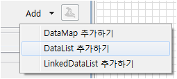
[그림 31-9]6
3. 추가하기를 누르면 Data Info창이 활성화 되는데 해당 영역은 개발자가 셋팅하는 부분이라 넘어가겠습니다.

[그림 31-10]gridview_3
4. Data 창에서 그리드 행추가를 누르면 그리드행 한줄 추가됩니다.

[그림 31-11]gridview_4
5. 그려진 1번행을 클릭하고 그리드 행을 제거할수 있습니다.

[그림 31-12]gridview_6
6. 만들어진 행 위에 새로 행추가 되는 버튼입니다.

[그림 31-13]gridview_7
6. 선택한 행의 순서를 위로 이동시킬 수 있습니다.

[그림 31-14]gridview_7
6. 선택한 행의 순서를 아래로 이동시킬 수 있습니다.

[그림 31-15]gridview_7
7. Column Info창은 그리드컴포넌트의 head영역이라고 생각하시면 되겠습니다. name 부분에 입력한 내용은 preview 시 head부분에 반영됩니다.
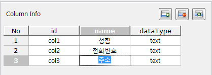
8. DataCollection의 마지막인 Data영역입니다. 이부분은 그리드에서 실제로 보여지는 body내역입니다.
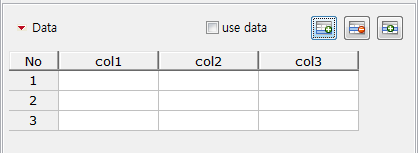
9. 상단 행추가를 누르고 아래화면처럼 데이터를 입력합니다.
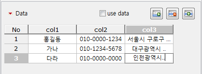
10. 브라우저에서 편집한 데이터를 확인하려면 반드시 use data 체크박스를 활성화해야합니다.

[그림 31-16]gridview_10
31.5.2DataCollection Excel복사 설정방법
DataCollection의 Data는 직접 만들어진 Excel을 복사해서 붙여넣기 가능합니다. 반대로 입력한 데이터를 Excel에 붙여넣기도 가능합니다.
1. 예제로 Excel에 있는 데이터를 복사해 보겠습니다.

2. Data창에서 행 한줄 생성한 다음 첫번째 컬럼을 선택하고 붙여넣기를 합니다.
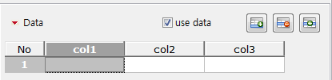
3. 웹스퀘어의 그리드 컴포넌트는 Excel 기반의 데이터호환이 가능해서 편집이 쉬워집니다.
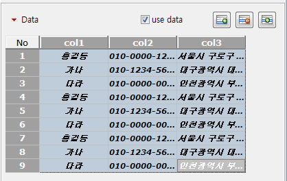
31.5.3GridView생성
2. Click & Click 모드로 생성하면 엔진에서 자동으로 css 가 부여되는데 이부분을 변경하겠습니다.css에서 width및height값을 변경했습니다.
 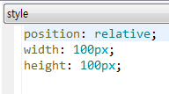
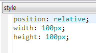
 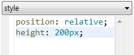
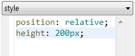
3. 만든 데이터를 component창에서 dataList1을 선택합니다.

4. 해당 dataList1를 디자인뷰의 GridView영역에 드래그합니다.

[그림 31-17]gridview_11
5. dataList1에 생성 대화창이 뜨는데 OK버튼을 클릭합니다.
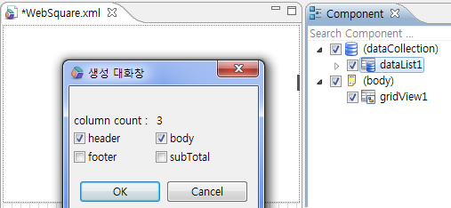
6. 아래 화면처럼 디자인 뷰에서 그리드뷰가 생성된것을 확인 할 수 있습니다. (DataCollection의 Column Info 내용이 나옵니다. )

7. 마지막으로 Property 창에서 autoFit 속성을 allColumn으로 선택합니다.

8. 브라우저에서 띄워보면 GridView 생성된화면을 확인할수 있습니다.

참고: 그리드뷰 영역 선택 > 우측 마우스 클릭 > 메뉴에서 Header추가, Body추가를 먼저 하였을 경우 (Header 추가 된 후 Body 추가 메뉴 활성화 됨),
아래 그림과 같이 헤더와 바디 한 컬럼씩 생성이 됩니다.

[그림 31-18]gridview_17
생성이 된 컬럼 영역을 선택 > 우측 마우스 클릭 > 메뉴 선택, 또는 웹스퀘어 상단 아이콘 영역에서 열, 행을 추가 할 수 있습니다.

[그림 31-19]<우측 마우스 클릭 시 메뉴>

[그림 31-20]<웹스퀘어 상단 아이콘>
dataList1를 디자인뷰의 GridView영역에 드래그합니다.
dataList1에 "생성" 대화창이 뜨면 Option(신규생성, 헤더만 업데이트, 바디만 업데이트, 모두 업데이트)선택 후 OK버튼을 누르시면 됩니다.

[그림 31-21]gridview_13
N/A
신규생성 : 저장한 데이터를 무시하고 새로(기본값) 내용 가져옴
헤더만 업데이트 : 저장한 데이터의 헤더 내용만 가져옴
바디만 업데이트 : 저장한 데이터의 바디 내용만 가져옴
모두 업데이트 : 저장한 데이터의 헤더,바디 내용 모두 가져옴
31.5.4Grid와 GridView 차이점
Grid와 GridView는 데이터를 표현하는 목적에 있어서 같은 기능을 갖고 있습니다. 하지만, Grid의 경우 데이터와 그리드의 편집이 가능한 반면 GridView의 경우 그리드의 편집만이 가능합니다.

[그림 31-22]<그림 1. Grid vs. GridView>
31.6주의사항 및 Tip
그리드뷰에서 보여지는 리스트를 만들려면 DataCollection의 행의 갯수가 있어야만 리스트가 보여집니다. (DataCollection 설정 필수)
그리드뷰를 Palette에서 그릴 경우 자동으로 height:150px; 스타일 생성이 되는데, 임의로 height값을 지울경우 브라우저상에서 그리드가 보이지 않게됩니다. (height값은 필수로 넣어야함)
그리드뷰에서 리스트(헤더컬럼, 바디컬럼)의 높이를 외부 스타일 시트로 줄 경우, inline-style로 들어간 컬럼 높이값도 동일하게 맞춰야 합니다. (기본적으로 바디 컬럼의 높이값은 height="20px" 인라인스타일로 들어감)
외부스타일 시트에서 !important 사용하여 강제로 height값을 주더라도, Dom에서 먼저 인라인 스타일로 들어간 height값을 읽어 그려지기때문에 브라우저에서 확인 할 경우 그리드뷰가 깨지거나, 불필요한 스크롤이 발생 하는 등 예상치 못한 오류가 생길 수 있습니다.
css에서 !important 사용하거나 바디컬럼의 인라인스타일 height값을 삭제하여 쓰지마시기 바랍니다.
InputType의 drilldown 사용시 depthColumn, depthType, showDepth 속성을 같이 설정 합니다. [gridView drilldown 가이드 링크 연결 ]
InputType의 textImage 사용시 imageHeight, imageSrc, imageWidth 속성을 같이 설정 합니다.
이미지 높이값은 그리드 컬럼의 높이값과 같거나 작아야 합니다. (이미지 높이값이 그리드 컬럼 높이값 보다 클 경우 그리드뷰 쓰기기능 일때 움짤현상 발생)
ex) 그리드뷰 컬럼 높이값 height="20px" 이면, 이미지 높이값은 20px이나 이하 사이즈로 설정)
웹스퀘어 Config에서 설정 할 수 있는 속성
그리드뷰의 Property에서 설정할 수 있는 속성들은 Config 파일에서도 설정이 가능하며, 그리드 컬럼의 기본배경색상, 마우스 오버시 행의 색상, 그 외 등 설정이 가능합니다.
rowNumBackgroundColor : 순번(rowNum) body의 배경색
selectedRowColor : 선택된 행의 배경색
evenRowBackgroundColor : 짝수 행의 배경색
oddRowBackgroundColor : 홀수 행의 배경색
rowMouseOverColor : 마우스 오버시 행의 배경색
- 그 외 사용하는 속성 스타일
tooltipStyle : 툴팁
noResultMessage : 데이터 0건일때 표시되는 메세지
noResultMessageStyle : 데이터 0건일때 표시되는 메세지 디자인 스타일
chooseOptionLabel : selectbox, autoComplete 라벨의 문자 설정
주의할 점 : config파일에서 설정할 경우, 추후 웹스퀘어 엔진 패치가 새롭게 이루어지게 되면 기존에 변경된 설정은 초기화 됩니다.
설정이 변경된 config 파일은 백업해 두었다가 재설정 해주시면 됩니다.